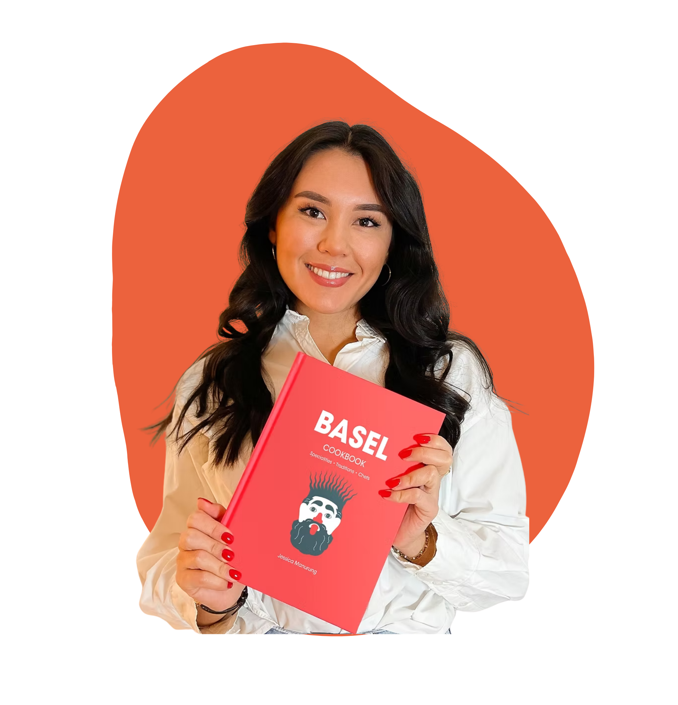

Was?
TasteUp bringt Craft Food & Beverage Startups mit Konsument:innen, anderen Gründer:innen und Gastronomiebetrieben zusammen. Degustieren, Gründer:innen kennenlernen, Kontakte knüpfen.
Mehr DetailsGründen · Geniessen · Vernetzen
Der Afterwork-Marktplatz für Craft Food & Beverage Startups, Foodies & Gastronomie
Probieren, entdecken & vernetzen. Alles an einem Abend.
TasteUp ist ein Ort des Austauschs, der Degustation und des Netzwerkens — in entspannter Afterwork-Atmosphäre statt im Konferenzsaal.
TasteUp bringt Craft Food & Beverage Startups mit Konsument:innen, anderen Gründer:innen und Gastronomiebetrieben zusammen. Degustieren, Gründer:innen kennenlernen, Kontakte knüpfen.
Mehr Details
Dienstag, 14. Oktober 2025
18:00 – 21:00 Uhr
Komm und geh, wann es dir passt — das Programm läuft fliessend.
Literaturhaus Basel
Barfüssergasse 3, 4051 Basel
Mitten in der Basler Innenstadt, direkt beim Barfüsserplatz.
Entdecken, probieren und vernetzen — alles an einem Abend. Zwischen den Degustationsrunden gibt es einen kurzen Keynote-Block.

Keynote Speakerin
„Storytelling mit Geschmack: Die Kraft von Content in der Gastro-Welt“
Jessica Manurung, besser bekannt als @basel_eats, ist eine Food-Bloggerin aus Basel, die seit 2019 authentische Restaurant-Tipps auf Instagram und TikTok teilt. Neben ihrer Expertise in Marketing und Content Creation veröffentlichte sie 2023 das Basel Cookbook, lancierte 2024 den Bestie Cider und startete 2025 mit Basel Eats Together ein modernes Supper-Club-Konzept, das Menschen durch gutes Essen verbindet und die lokale Gastroszene erlebbar macht.
Von alkoholfreiem Sparkling über handgerollte Bagels bis zum Crêpes-Roboter — filtere nach Kategorie und entdecke, wer am Marktplatz steht.
Du baust ein Craft Food oder Beverage Startup auf und willst es echten Foodies und Gastronom:innen vorstellen? Am TasteUp-Marktplatz bekommst du deinen eigenen Stand.
TasteUp entsteht in Zusammenarbeit mit Organisationen, die die regionale Food- und Startup-Szene stärken.
Interessiert daran, Partner zu werden?
Probieren, entdecken & vernetzen. Alles an einem Abend.